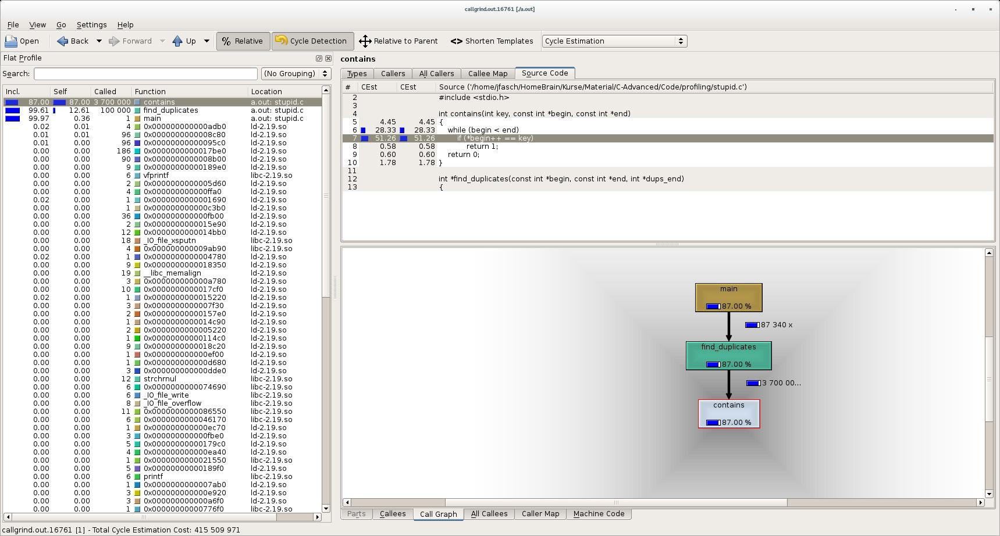

callgrind¶
callgrind - How it Works¶
How does it work?
valgrind: run-time code instrumentationcallgrindis a “tool” usingvalgrindinfrastructureCall-graph analysis, optional cache and branch-prediction analysis
Compared to good old gprof …
Sluggishly slow (the price of run-time instrumentation)
More accurate
Nice graphical tool ⟶
kcachegrind
callgrind - How it is Used¶
Compiler and Linker Calls¶
$ gcc -c -o program.o program.c
$ gcc -g -c -o program.o program.c # debug info
$ gcc -o program program.o
No compiler attention needed
Debug information only for source annotation (⟶
kcachegrind)
Producing Output:
callgrind.out.<pid>¶$ valgrind --tool=callgrind ./program
...
$ ls callgrind.out.*
callgrind.out.16761
callgrind - Analysis Per Commandline¶
Basically records the same information as gprof
Flat profile
Call Graph
All sorts of counters (can detect cache misses etc.)
Most basic analysis tool: callgrind_annotate
$ callgrind_annotate callgrind.out.16761
... unreadable but informative garbage ...
callgrind - Analysis With kcachegrind¶

callgrind - Useful Options¶
Instrumented code takes very long
Start without instrumentation
Switch on explicitly during runtime (by PID)
Start Without Instrumentation¶
$ valgrind --tool=callgrind --instr-atstart=no ./program
Switch on Instrumentation¶
$ callgrind_control --instr=on 16761